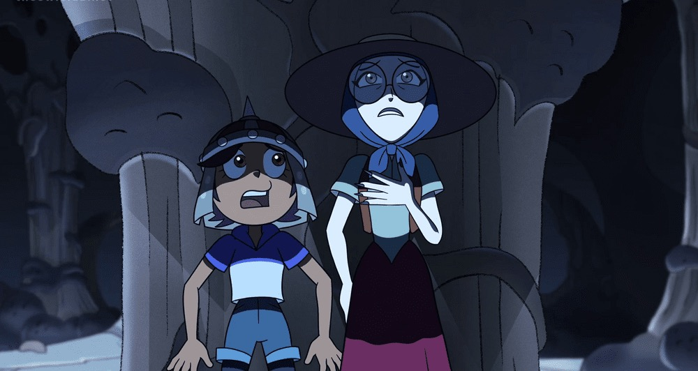
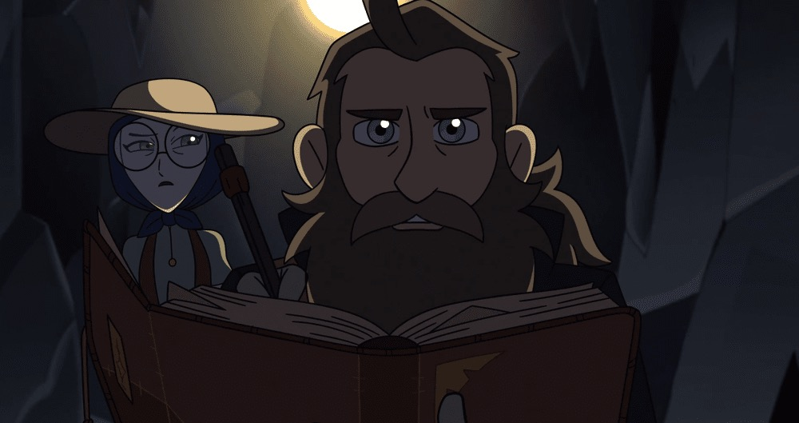

After S2 E12: Elsewhere and Elsewhen · 30–35 minutes. Discuss this episode without revealing later events.

Mission 1 of 7
Tap a character to read their file. Use the button in the file to mark up to two favourites and tell your teacher what you admire about them.
Speaking: What do you admire about your favourites? Which quality would you like to have?
Use these words to retell the episode. Speak first; notes are optional.
Why did Luz want to meet Philip? What did Luz and Lilith discover about him?
Choose the character. If you make a mistake, try again.

A goal or something you want to do.
I would like to learn magic.Something you want to be different now.
I wish I knew more about magic.Tip: For imaginary situations, we often say I wish I were... and I wish I could...
Optional writing: Choose someone you admire. Write one sentence with I would like to and one with I wish.
These are guesses, not spoilers. Choose your predictions and explain your clues aloud.
For each prediction: Why do you think so? What could happen if you're wrong?
Choose someone you admire. Write 5–6 sentences about their qualities and what you would like to learn from them.
My favourite character is...
I admire them because...
I would like to...
I wish I could...
However,...
If I lived on the Boiling Isles, I would...
0 words · Aim for 5–6 sentences
Tell your teacher which prediction you believe most strongly. Save your predictions and writing so you can compare them with what happens later in the season.
No future-episode answers have been revealed.
Fluent Mind Adventures · Episode and image credits